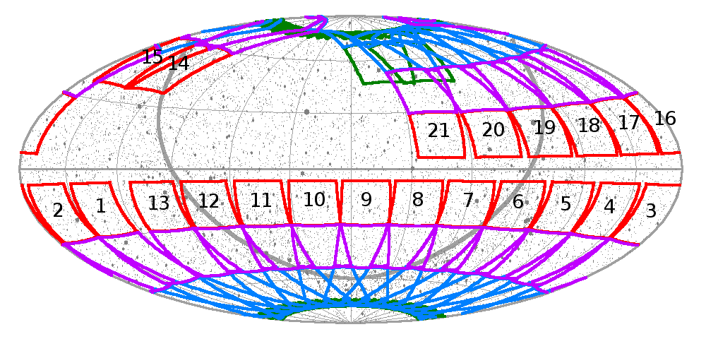
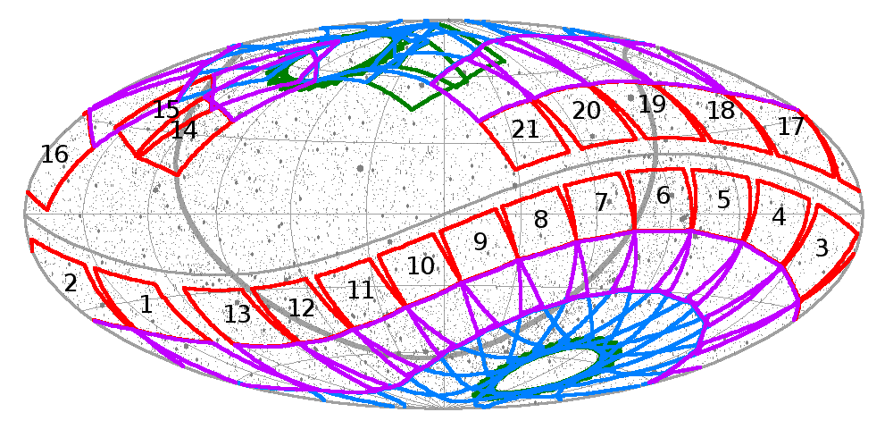
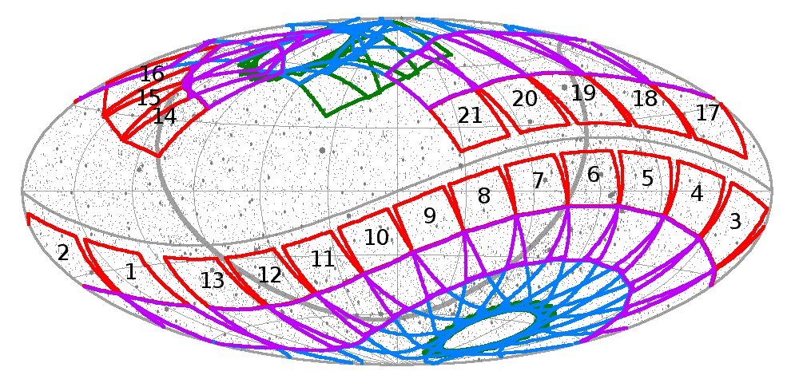

TESS will observe the northern ecliptic hemisphere during the second year of its primary mission. The cameras will be oriented along a line of ecliptic longitude (as they were in Year 1), with that longitude determined by the anti-solar longitude at the mid-point of the sector. For most of Year 2, the camera array will be oriented such that Camera 4 is centered on the northern ecliptic pole: in this orientation, the southernmost edge of Camera 1 is ~6° from the ecliptic.
However, for Sectors 14 and 15, scattered light from the Earth and Moon is predicted to be a significant problem in Cameras 1 and 2, reducing the available observing time for exoplanet transits by as much as 75% in those cameras. To reduce the impact of scattered light, the field-of-view of the camera array will be shifted north by 31° with respect to its nominal pointing in Sectors 14 and 15.
When the cameras are shifted north, the northern ecliptic pole will be located 7° from the center of camera 3, and the southernmost edge of Camera 1 will be at an ecliptic latitude of ~37°. In addition, with this shift, the fields-of-view of Cameras 3 and 4 will be observing “on the other side of the pole”, thereby providing additional observations of parts of the sky that would otherwise only be observed in Sectors 20-22.
Scattered light from the Earth and Moon is also expected to be a problem in Sectors 25 and 26 and, to a lesser extent, in Sectors 16 and 24. The scattered light performance in Sectors 14 and 15 will be reviewed before deciding the instrument pointing in these later sectors.
The sky coverage maps for Sectors 1-21 are given below in the ecliptic and celestial coordinate systems. Two sets of maps are shown below: the upper pair is the sky coverage if Sector 16 is observed at the nominal camera orientation, while the lower pair is the sky coverage if Sector 16 is shifted north.
Additional details on TESS observations can be found at the MIT TESS website. The Web TESS Viewing Tool (WTV) has been updated to reflect the change in pointing for Sectors 14 and 15.
Sectors 14 and 15 shifted north:  
Sectors 14, 15, and 16 shifted north: 